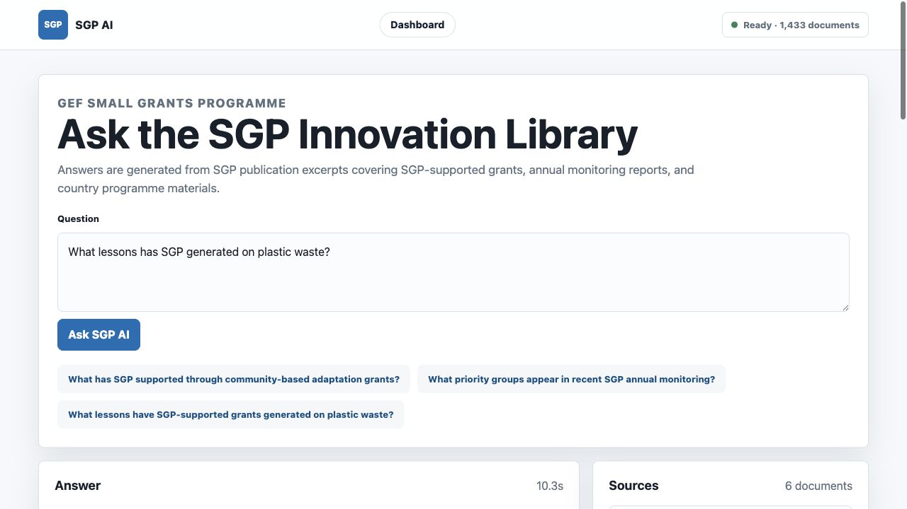
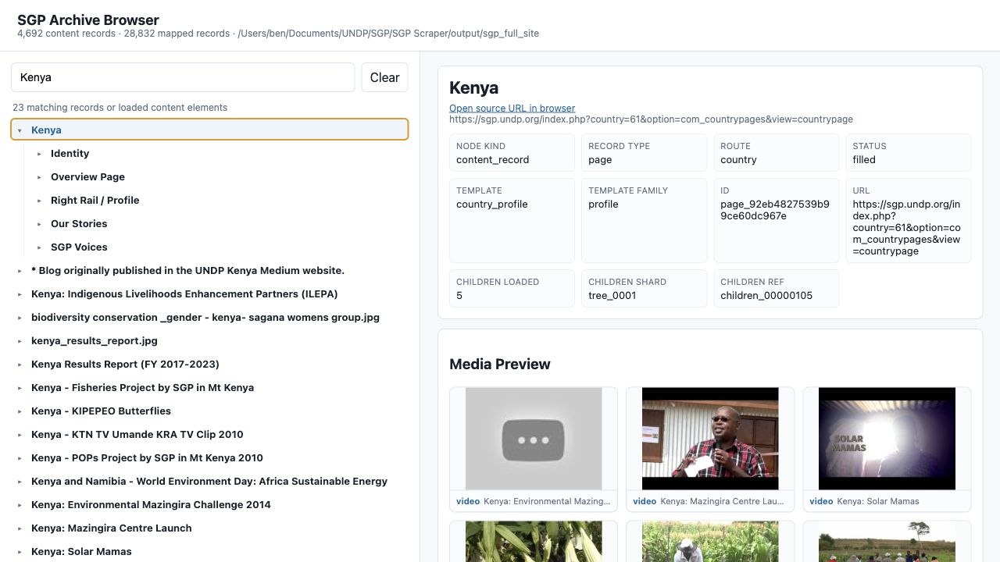

GEF Small Grants Programme
SGP digital tools
Three lightweight interfaces for asking questions, exploring the grant portfolio, and inspecting the scraped SGP archive.

AI Ask the innovation libraryQuery SGP publications and annual monitoring material with cited source cards.
 Dashboard
Explore the grant portfolio
Dashboard
Explore the grant portfolio
Filter grants by geography, theme, finance, and partner dimensions on the atlas.

Archive Inspect scraped site contentBrowse country, area, article, media, and document records from the SGP archive.